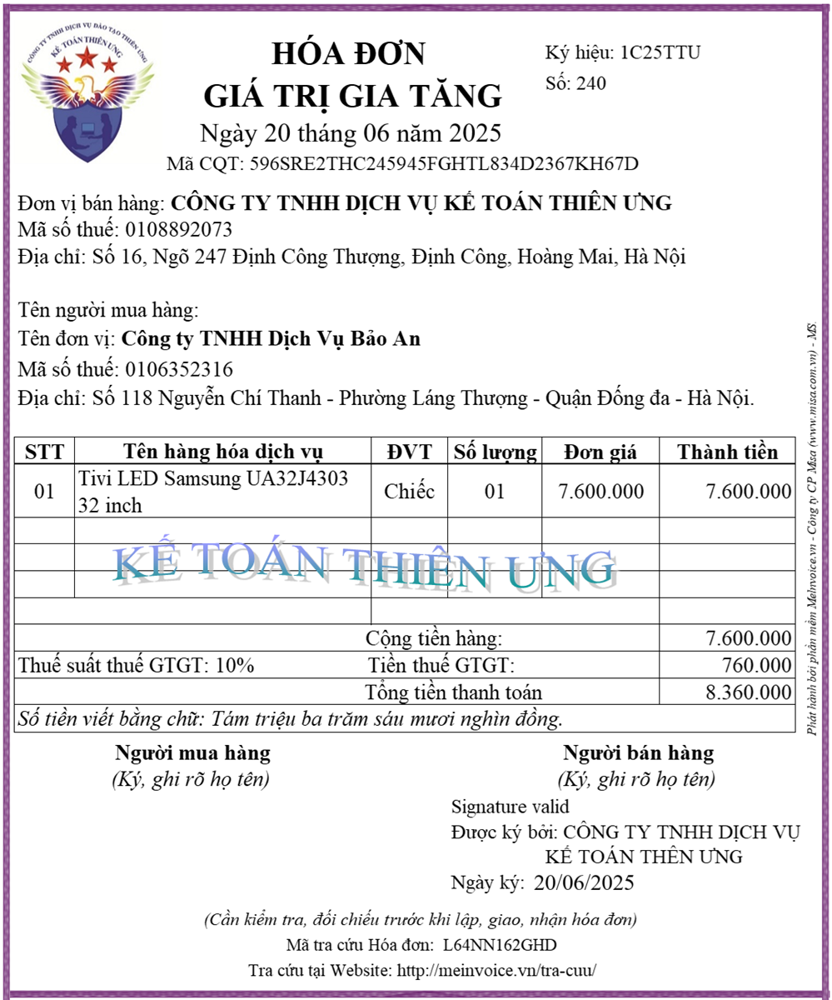
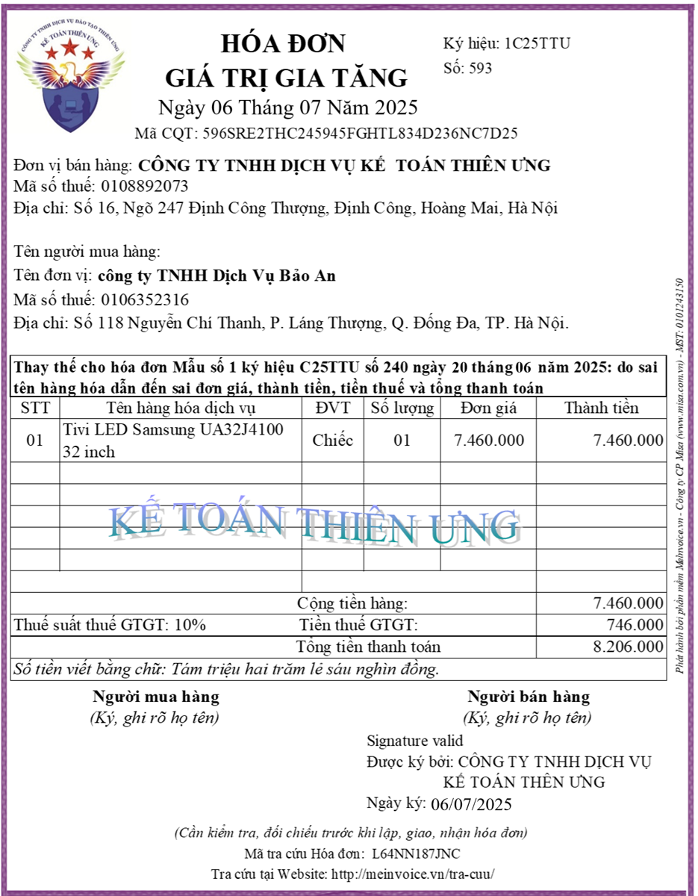

Bắt đầu từ ngày 01/06/2025 trở đi, tức là kể từ khi nghị 70/2025/NĐ-CP có hiệu lực thì việc kê khai hóa đơn thay thế đã được quy định cụ thể tại Khoản 13 Điều 1 Nghị định 70/2025/NĐ-CP như sau:
5. Áp dụng hóa đơn điều chỉnh, thay thế
d) Hóa đơn điều chỉnh, hóa đơn thay thế đối với trường hợp quy định tại điểm b khoản 1 Điều này thì người bán, người mua khai bổ sung vào kỳ phát sinh hóa đơn bị điều chỉnh, bị thay thế;
Trong đó: điểm b khoản 1 Điều này là:
1. Trường hợp phát hiện hóa đơn điện tử đã lập sai (bao gồm hóa đơn điện tử đã được cấp mã của cơ quan thuế, hóa đơn điện tử không có mã của cơ quan thuế đã gửi dữ liệu đến cơ quan thuế) thì người bán thực hiện xử lý như sau:
b) Trường hợp có sai: mã số thuế; sai về số tiền ghi trên hóa đơn, sai về thuế suất, tiền thuế hoặc hàng hóa ghi trên hóa đơn không đúng quy cách, chất lượng thì có thể lựa chọn điều chỉnh hoặc thay thế hóa đơn điện tử như sau:
Trong đó: điểm b khoản 1 Điều này là:
1. Trường hợp phát hiện hóa đơn điện tử đã lập sai (bao gồm hóa đơn điện tử đã được cấp mã của cơ quan thuế, hóa đơn điện tử không có mã của cơ quan thuế đã gửi dữ liệu đến cơ quan thuế) thì người bán thực hiện xử lý như sau:
b) Trường hợp có sai: mã số thuế; sai về số tiền ghi trên hóa đơn, sai về thuế suất, tiền thuế hoặc hàng hóa ghi trên hóa đơn không đúng quy cách, chất lượng thì có thể lựa chọn điều chỉnh hoặc thay thế hóa đơn điện tử như sau:
b.1) Người bán lập hóa đơn điện tử điều chỉnh hóa đơn đã lập sai.
Hóa đơn điện tử điều chỉnh hóa đơn điện tử đã lập sai phải có dòng chữ “Điều chỉnh cho hóa đơn Mẫu số... ký hiệu... số... ngày... tháng... năm”.
b.2) Người bán lập hóa đơn điện tử mới thay thế cho hóa đơn điện tử lập sai.
Hóa đơn điện tử mới thay thế hóa đơn điện tử đã lập sai phải có dòng chữ “Thay thế cho hóa đơn Mẫu số... ký hiệu... số... ngày... tháng... năm”.
Vậy là: Theo nghị định 70/2025/NĐ-CP thì:
Đối với hóa đơn thay thế thì cả bên bán và bên mua đều kê khai hóa đơn thay thế vào kỳ phát sinh hóa đơn bị thay thế
Đối với hóa đơn thay thế thì cả bên bán và bên mua đều kê khai hóa đơn thay thế vào kỳ phát sinh hóa đơn bị thay thế
Lưu ý với các bạn rằng: Từ ngày 01/06/2025 trở đi, Khi phát sinh hàng bán bị trả lại thì chỉ dùng hóa đơn điều chỉnh để xử lý mà không sử dụng hóa đơn thay thế để xử lý hàng bán bị trả lại
Còn trước ngày 01/06/2025 thì không có thông tư hay nghị định nào quy định cụ thể về cách kê khai hóa đơn thay thế cả mà chỉ có các công văn hướng dẫn thôiMặc dù vậy, nhưng cách kê khai hóa đơn thay thế ở thời điểm trước hay sau ngày 01/06/2025 đều được hướng dẫn kê khai giống nhau => Đó là: Cả bên bán và bên mua đều thực hiện dùng hóa đơn thay thế để kê khai bổ sung vào kỳ phát sinh hóa đơn bị thay thế
Dưới đây, Công ty đào tạo Kế Toán Diệu Tâm sẽ đi làm rõ các khái niệm, thuật ngữ liên quan đến hóa đơn thay thế và hướng dẫn các bạn thực hiện kê khai hóa đơn thay thế trong từng trường hợp cụ thể:
Thuế GTGT là loại thuế có kỳ kê khai theo tháng hoặc theo quý

Hóa đơn thay thế có thể được lập cùng kỳ với hóa đơn bị thay thế hoặc được lập khác kỳ với hóa đơn bị thay thế
Do vậy, trước khi hướng dẫn các bạn cách kê khai hóa đơn thay thế thì Kế Toán Diệu Tâm sẽ làm cho các bạn hiểu về các khái niệm:
Thế nào là hóa đơn thay thế? Thế nào là hóa đơn bị thay thế?
Ví dụ:
Thế nào là cùng kỳ? Thế nào là khác kỳ?
+ Ngày 30/06/2025, Bán hàng và lập hóa đơn số 00001000
+ Đến ngày 10/07/2025, Phát hiện ra hóa đơn số 00001000 lập ngày 30/06/2025 có sai sót
+ Đến ngày 10/07/2025, Phát hiện ra hóa đơn số 00001000 lập ngày 30/06/2025 có sai sót
=> Hai bên thống nhất xử lý hóa đơn có sai sót này bằng hình thức lập hóa đơn thay thế
=> Bên bán đã xuất hóa đơn thay thế số 00001095 vào ngày 10/07/2025
=> Sau khi xuất xong hóa đơn thay thế số 00001095 thì trên phần mềm lập hóa đơn điện tử và trên hệ thống https://hoadondientu.gdt.gov.vn/ của tổng cục thuế: hóa đơn có sai sót số 00001000 lập ngày 30/06/2025 sẽ trở thành hóa đơn bị thay thế (Cụ thể là hóa đơn số 00001000 bị thay thế bởi hóa đơn số 00001095)
+ Lúc này hóa đơn có thông tin đúng là hóa đơn thay thế số 00001095
+ Còn hóa đơn bị thay thế số 00001000 hết giá trị
=> Bên bán đã xuất hóa đơn thay thế số 00001095 vào ngày 10/07/2025
=> Sau khi xuất xong hóa đơn thay thế số 00001095 thì trên phần mềm lập hóa đơn điện tử và trên hệ thống https://hoadondientu.gdt.gov.vn/ của tổng cục thuế: hóa đơn có sai sót số 00001000 lập ngày 30/06/2025 sẽ trở thành hóa đơn bị thay thế (Cụ thể là hóa đơn số 00001000 bị thay thế bởi hóa đơn số 00001095)
+ Lúc này hóa đơn có thông tin đúng là hóa đơn thay thế số 00001095
+ Còn hóa đơn bị thay thế số 00001000 hết giá trị
Kỳ ở đây là kỳ kê khai thuế GTGT: Kỳ kê khai thuế GTGT theo tháng hoặc kỳ kê khai thuế GTGT theo quý
Ví dụ 1: Hóa đơn bị thay thế (hóa đơn có sai sót) cùng kỳ với hóa đơn thay thế
Công ty Kế Toán Diệu Tâm có kỳ kê khai thuế GTGT theo quý
+ Ngày 20/07/2025, Bán hàng và lập hóa đơn số 00000920
+ Đến ngày 15/08/2025, Phát hiện ra hóa đơn số 00000920 lập ngày 20/07/2025 có sai sót => Nên đã lập hóa đơn thay thế số 00000935 ngày 15/08/2025
Chúng ta thấy rằng: Đối với Công ty Kế Toán Diệu Tâm thì:
+ Đến ngày 15/08/2025, Phát hiện ra hóa đơn số 00000920 lập ngày 20/07/2025 có sai sót => Nên đã lập hóa đơn thay thế số 00000935 ngày 15/08/2025
Chúng ta thấy rằng: Đối với Công ty Kế Toán Diệu Tâm thì:
+ Hóa đơn bị thay thế (hóa đơn có sai sót) số 00000920 được lập vào ngày 20/07/2025: Tức là thuộc kỳ qúy 3/2025
+ Và hóa đơn thay thế số 00000935 được lập vào ngày 15/08/2025: Tức là cũng thuộc kỳ qúy 3/2025
+ Và hóa đơn thay thế số 00000935 được lập vào ngày 15/08/2025: Tức là cũng thuộc kỳ qúy 3/2025
=> Hóa đơn bị thay thế (hóa đơn có sai sót) số 00000920 và hóa đơn thay thế số 00000935 đang thuộc vào cùng 1 kỳ đó là kỳ quý 3/2025
Ví dụ 2: Hóa đơn bị thay thế (hóa đơn có sai sót) khác kỳ với hóa đơn thay thế
Công ty Bảo Minh có kỳ kê khai thuế GTGT theo tháng
+ Ngày 25/06/2025, Bán hàng và lập hóa đơn số 00000800
+ Đến ngày 03/07/2025, Phát hiện ra hóa đơn số 00000800 lập ngày 25/06/2025 có sai sót => Nên đã lập hóa đơn thay thế số 00000862 ngày 03/07/2025
Chúng ta thấy rằng: Đối với Công ty Bảo Minh thì:
+ Đến ngày 03/07/2025, Phát hiện ra hóa đơn số 00000800 lập ngày 25/06/2025 có sai sót => Nên đã lập hóa đơn thay thế số 00000862 ngày 03/07/2025
Chúng ta thấy rằng: Đối với Công ty Bảo Minh thì:
| Hóa đơn bị thay thế (hóa đơn có sai sót) số 00000800 | đang khác kỳ với | Hóa đơn thay thế số 00000862 |
| được lập vào ngày 25/06/2025 | được lập vào ngày 03/07/2025 | |
| Tức là thuộc kỳ tháng 6/2025 | KHÁC | Tức là thuộc kỳ tháng 7/2025 |
=> Nên trước khi tiến hành kê khai hóa đơn thay thế thì các bạn phải phân biệt rõ như vậy để thực hiện kê khai đúng quy định
Dưới đây, Công ty Kế Toán Diệu Tâm sẽ hướng dẫn các bạn cách kê khai hóa đơn thay thế theo nghị định 70/2025/NĐ-CP trong từng trường hợp cụ thể:
1. Cách kê khai hóa đơn thay thế cùng kỳ kê khai với hóa đơn bị thay thế (hóa đơn có sai sót)
Nếu hóa đơn thay thế và hóa đơn bị thay thế (hóa đơn có sai sót) phát sinh cùng 1 kỳ thì:
+ Chỉ dùng hóa đơn thay thế để kê khai thuế GTGT
+ Không dùng hóa đơn bị thay thế (hóa đơn có sai sót) để kê khai thuế (Vì sau khi lập hóa đơn thay thế thì hóa đơn bị thay thế này đã hết giá trị)
+ Chỉ dùng hóa đơn thay thế để kê khai thuế GTGT
+ Không dùng hóa đơn bị thay thế (hóa đơn có sai sót) để kê khai thuế (Vì sau khi lập hóa đơn thay thế thì hóa đơn bị thay thế này đã hết giá trị)
+ Công ty Kế Toán Diệu Tâm có kỳ kê khai thuế GTGT là kỳ theo quý
+ Công ty Bảo An có kỳ kê khai thuế GTGT là theo tháng
Có phát sinh hóa đơn như sau:
+ Ngày 10/06/2025: Bán hàng và lập hóa đơn số 00001350
+ Đến ngày 15/026/2025: Bên mua phát hiện ra hóa đơn số 00001350 có sai sót
+ Đến ngày 15/026/2025: Bên mua phát hiện ra hóa đơn số 00001350 có sai sót
=> Hai bên thống nhất xử lý hóa đơn có sai sót này bằng hình thức lập hóa đơn thay thế
=> Bên bán đã xuất hóa đơn thay thế số 00001420 vào ngày 15/06/2025
=> Bên bán đã xuất hóa đơn thay thế số 00001420 vào ngày 15/06/2025
Kê khai thuế GTGT:
Ví dụ 2: Công ty Kế Toán Diệu Tâm bán hàng cho công ty Đại Phát:
|
Đối với bên bán (Công ty Kế Toán Diệu Tâm) |
Đối với bên mua (Công ty Bảo An) |
|
Vì có kỳ kê khai thuế GTGT là theo quý mà hóa đơn thay thế số 00001420 đang có cùng kỳ kê khai với hóa đơn bị thay thế số 00001350 (cùng thuộc vào kỳ quý 2/2025)
|
Vì có kỳ kê khai thuế GTGT là theo tháng mà hóa đơn thay thế số 00001420 đang có cùng kỳ kê khai với hóa đơn bị thay thế số 00001350 (cùng thuộc vào kỳ tháng 6/2025)
|
|
Nên Công ty Diệu Tâm sẽ:
+ Dùng hóa đơn thay thế số 00001420 để kê khai thuế GTGT vào kỳ quý 2/2025
+ Mà không dùng hóa đơn bị thay thế (hóa đơn có sai sót) số 00001350 để kê khai thuế
|
Nên Công ty Bảo An sẽ:
+ Dùng hóa đơn thay thế số 00001420 để kê khai thuế GTGT vào kỳ tháng 6/2025
+ Mà không dùng hóa đơn bị thay thế (hóa đơn có sai sót) số 00001350 để kê khai thuế
|
Ví dụ 2: Công ty Kế Toán Diệu Tâm bán hàng cho công ty Đại Phát:
+ Công ty Kế Toán Diệu Tâm có kỳ kê khai thuế GTGT là kỳ theo quý
+ Công ty Đại Phát cũng có kỳ kê khai thuế GTGT là theo quý
Có phát sinh hóa đơn như sau:
+ Ngày 20/07/2025: Bán hàng và lập hóa đơn số 00001680 (Đây là hóa đơn gốc - gọi là F0)
+ Đến ngày 31/07/2025: Bên mua phát hiện ra hóa đơn số 00001680 có sai sót
+ Đến ngày 31/07/2025: Bên mua phát hiện ra hóa đơn số 00001680 có sai sót
=> Hai bên thống nhất xử lý hóa đơn có sai sót này bằng hình thức lập hóa đơn thay thế
=> Bên bán đã xuất hóa đơn thay thế số 00001722 vào ngày 31/07/2025 (Đây là hóa đơn thay thế lần 1 - gọi là F1)
=> Bên bán đã xuất hóa đơn thay thế số 00001722 vào ngày 31/07/2025 (Đây là hóa đơn thay thế lần 1 - gọi là F1)
+ Đến ngày 15/08/2025: Lại tiếp tục phát hiện ra hóa đơn số 00001722 có sai sót
=> Vì hóa đơn F0 số 00001680 đã được xử lý sai sót bằng hình thức lập hóa đơn thay thế nên khi hóa đơn F1 số 00001722 bị sai thì sẽ phải xử lý tiếp bằng hình thức lập hóa đơn thay thế
=> Bên bán đã xuất hóa đơn thay thế số 00001950 vào ngày 15/08/2025 (Đây là hóa đơn thay thế lần 2 - gọi là F2)
Lưu ý: Sau khi xuất xong hóa đơn thay thế F2 số 00001950 thì: Hóa đơn F1 số 00001722 trở thành hóa đơn bị thay thế (Cụ thể là hóa đơn số 00001722 bị thay thế bởi hóa đơn số 00001950)=> Hóa đơn F1 số 00001722 này cũng hết giá trị giống hóa đơn gốc số 00001680
Lưu ý: Sau khi xuất xong hóa đơn thay thế F2 số 00001950 thì: Hóa đơn F1 số 00001722 trở thành hóa đơn bị thay thế (Cụ thể là hóa đơn số 00001722 bị thay thế bởi hóa đơn số 00001950)=> Hóa đơn F1 số 00001722 này cũng hết giá trị giống hóa đơn gốc số 00001680
Kê khai thuế GTGT:
|
Đối với bên bán (Công ty Kế Toán Diệu Tâm) |
Đối với bên mua (Công ty Đại Phát) |
|
Vì có kỳ kê khai thuế GTGT là theo quý mà hóa đơn thay thế và hóa đơn bị thay thế đều có cùng kỳ kê khai là kỳ quý 3/2025
|
Vì có kỳ kê khai thuế GTGT là theo quý mà hóa đơn thay thế và hóa đơn bị thay thế đều có cùng kỳ kê khai là kỳ quý 3/2025
|
|
Nên Công ty Diệu Tâm sẽ:
+ Dùng hóa đơn thay thế cuối cùng số 00001950 để kê khai thuế GTGT vào kỳ quý 3/2025
+ Mà không dùng hóa đơn bị thay thế số 00001680 và số 00001722 để kê khai thuế
|
Nên Công ty Đại Phát sẽ:
+ Dùng hóa đơn thay thế cuối cùng số 00001950 để kê khai thuế GTGT vào kỳ quý 3/2025
+ Mà không dùng hóa đơn bị thay thế số 00001680 và số 00001722 để kê khai thuế
|
Lưu ý: Nếu trong cùng 1 kỳ kê khai mà 1 hóa đơn bị thay thế nhiều lần thì sẽ sử dụng hóa đơn thay thế lần cuối cùng để kê khai thuế
2. Cách kê khai hóa đơn thay thế khác kỳ kê khai với hóa đơn bị thay thế (hóa đơn có sai sót)
Những thông tin trên hóa đơn được sử dụng để kê khai lên tờ khai thuế GTGT?
Đó là những thông tin sau:
* Đối với bên bán: Hóa đơn đầu ra liên quan đến tờ khai thuế GTGT mẫu 01/GTGT như sau:
+ Thông tin về số tiền tại các dòng chỉ tiêu "Cộng tiền hàng", "Tiền thuế GTGT" trên hóa đơn sẽ liên quan đến doanh thu (cột giá trị HH-DV) và tiền thuế GTGT trên tờ khai thuế GTGT
(Liên quan đến các chỉ tiêu từ 26 đến 36 trên tờ khai thuế 01/GTGT tùy theo mức thuế suất thuế GTGT)
+ Thông tin về thuế suất thuế GTGT: liên quan đến việc doanh thu tại dòng "Cộng tiền hàng" trên hóa đơn đó sẽ kê khai vào chỉ tiêu nào trong các chỉ tiêu từ 26 đến 36 trên tờ khai thuế 01/GTGT, hay sẽ kê khai lên phụ lục giảm thuế GTGT (nếu hóa đơn đó đang bán mặt hàng được giảm thuế GTGT)
* Đối với bên mua: Hóa đơn đầu vào sẽ liên quan đến chỉ tiêu 23, 24, 25 trên tờ khai thuế GTGT mẫu 01/GTGT
* Đối với bên mua: Hóa đơn đầu vào sẽ liên quan đến chỉ tiêu 23, 24, 25 trên tờ khai thuế GTGT mẫu 01/GTGT
Thông tin về số tiền tại các dòng chỉ tiêu "Cộng tiền hàng", "Tiền thuế GTGT" trên hóa đơn sẽ dùng để kê khai lên các chỉ tiêu 23, 24, 25 trên tờ khai thuế GTGT mẫu 01/GTGT
=> Đối với các lỗi sai trên hóa đơn liên quan đến tờ khai thuế GTGT như trên mà hóa đơn thay thế và hóa đơn bị thay thế (hóa đơn có sai sót) phát sinh khác kỳ thì: phải kê khai điều chỉnh, bổ sung hóa đơn thay thế vào kỳ tính thuế có sai sót
Tình huống: Công ty Kế Toán Diệu Tâm bán hàng cho công ty Bảo An:
+ Công ty Kế Toán Diệu Tâm có kỳ kê khai thuế GTGT là kỳ theo quý
+ Công ty Bảo An có kỳ kê khai thuế GTGT là theo tháng
Có phát sinh hóa đơn và kê khai thuế GTGT như sau:
+ Ngày 20/06/2025: Bán hàng và lập hóa đơn số 240 như sau:
+ Ngày 02/07/2025: Công ty Bảo An đã làm và nộp tờ kê khai thuế GTGT của kỳ tháng 6/2025 về CQT (đã kê khai hóa đơn đầu vào số 240 vào tờ khai thuế GTGT này)
+ Ngày 05/07/2025: Công ty Kế Toán Diệu Tâm đã làm và nộp tờ kê khai thuế GTGT của kỳ quý 2/2025 về CQT (đã kê khai hóa đơn đầu ra số 240 vào tờ khai thuế GTGT này)
+ Đến ngày 06/07/2025: Phát hiện ra hóa đơn số 240 có sai sót về đơn giá dẫn đến sai cả về Thành tiền, Cộng tiền hàng, tiền thuế GTGT và tổng thanh toán

+ Ngày 02/07/2025: Công ty Bảo An đã làm và nộp tờ kê khai thuế GTGT của kỳ tháng 6/2025 về CQT (đã kê khai hóa đơn đầu vào số 240 vào tờ khai thuế GTGT này)
+ Ngày 05/07/2025: Công ty Kế Toán Diệu Tâm đã làm và nộp tờ kê khai thuế GTGT của kỳ quý 2/2025 về CQT (đã kê khai hóa đơn đầu ra số 240 vào tờ khai thuế GTGT này)
+ Đến ngày 06/07/2025: Phát hiện ra hóa đơn số 240 có sai sót về đơn giá dẫn đến sai cả về Thành tiền, Cộng tiền hàng, tiền thuế GTGT và tổng thanh toán
=> Hai bên thống nhất xử lý hóa đơn có sai sót này bằng hình thức lập hóa đơn thay thế
=> Bên bán đã xuất hóa đơn thay thế số 539 vào ngày 06/07/2025 theo đúng với đơn giá đã thỏa thuận trên hợp đồng như sau:
=> Bên bán đã xuất hóa đơn thay thế số 539 vào ngày 06/07/2025 theo đúng với đơn giá đã thỏa thuận trên hợp đồng như sau:

Xác định tình huống và Kê khai thuế GTGT:
|
Đối với bên bán (Công ty Kế Toán Diệu Tâm) |
Đối với bên mua (Công ty Bảo An) |
|
+ Hóa đơn bị thay thế số 240 phát sinh vào ngày 20/06/2025: tức là thuộc vào kỳ quý 2/2025
+ Còn hóa đơn thay thế số 539 phát sinh vào ngày 06/07/2025: tức là thuộc vào kỳ quý 7/2025 => Hóa đơn thay thế đang khác kỳ kê khai với hóa đơn bị thay thế (hóa đơn có sai sót) |
+ Hóa đơn bị thay thế số 240 phát sinh vào ngày 20/06/2025: tức là thuộc vào kỳ tháng 6/2025
+ Còn hóa đơn thay thế số 539 phát sinh vào ngày 06/07/2025: tức là thuộc vào kỳ tháng 7/2025 => Hóa đơn thay thế đang khác kỳ kê khai với hóa đơn bị thay thế (hóa đơn có sai sót) |
|
=> Vì hóa đơn viết sai số 240 đang có doanh thu (7.600.000) và tiền thuế GTGT đầu ra (760.000) cao hơn so với giá trị và tiền thuế của hàng bán nên đã làm cho tờ khai thuế GTGT của quý 2/2025 bị sai sót (đang kê khai sai theo hóa đơn sai)
Nên Công ty Diệu Tâm sẽ sử dụng hóa đơn thay thế số 539 để kê khai điều chỉnh bổ sung vào kỳ quý 2/2025 (kỳ có sai sót)
Để điều chỉnh giảm phần chênh lệch giữa hóa đơn thay thế số 539 và hóa đơn bị thay thế số 240 :
+ Giảm doanh thu 140.000đ tại chỉ tiêu 32 + Giảm tiền thuế GTGT đầu là 14.000đ tại chỉ tiêu 33 |
=> Vì hóa đơn viết sai số 240 đang có giá trị hàng hóa mua vào (7.600.000) và tiền thuế GTGT đầu vào (760.000) cao hơn so với giá trị và tiền thuế của hàng mua nên đã làm cho tờ khai thuế GTGT của tháng 6/2025 bị sai sót (đang kê khai sai theo hóa đơn sai)
Nên Công ty Bảo An sẽ sử dụng hóa đơn thay thế số 539 để kê khai điều chỉnh bổ sung vào kỳ tháng 6/2025 (kỳ có sai sót)
Để điều chỉnh tăng phần chênh lệch giữa hóa đơn thay thế số 539 và hóa đơn bị thay thế số 240 :
+ Giảm giá trị hàng hóa dịch vụ mua vào là 140.000đ tại chỉ tiêu 23 + Giảm tiền thuế GTGT đầu vào là 14.000đ tại chỉ tiêu 24 và 25 |
| Lưu ý: Không được sử dụng hóa đơn thay thế số 539 ngày 06/07/2025 để kê khai vào kỳ quý 3/2025 (kỳ phát sinh hóa đơn thay thế) | Lưu ý: Không được sử dụng hóa đơn thay thế số 539 ngày 06/07/2025 để kê khai vào kỳ tháng 7/2025 (kỳ phát sinh hóa đơn thay thế) |
Chi tiết về cách kê khai điều chỉnh bổ sung tờ khai thuế GTGT thì các bạn xem tại đây: Cách kê khai điều chỉnh bổ sung tờ khai thuế GTGT có sai sót
Đối với các sai sót trên hóa đơn mà không liên quan đến số tiền trên hóa đơn như: Sai mã số thuế, ngày tháng, sai tên hàng hóa dịch vụ, sai đơn vị tính, sai số tiền viết bằng chữ…
thì không phải kê khai điều chỉnh bổ sung
Vì các sai sót trên không làm thay đổi doanh thu và tiền thuế => Doanh thu và tiền thuế trên hóa đơn thay thế và hóa đơn bị thay thế trong trường hợp này là giống nhau => Không thay đổi giá trị của tờ khai=> Doanh nghiệp chỉ cần kê khai 1 lần doanh thu và tiền thuế đầu ra theo số đúng (số đúng này đang có trên cả hóa đơn thay thế và hóa đơn bị thay thế) vào kỳ phát sinh nghĩa vụ thuế theo quy định tại điều 8 của thông tư 219/2013/TT-BTC
Ví dụ: Hóa đơn hóa đơn gốc lập sai số 00001286 phát sinh vào quý 2/2025, Có thông tin:
+ Cộng tiền hàng là 30.000.000
+ Tiền thuế GTGT 10% là 3.000.000
=> Đến quý 3/2025, mới phát hiện ra hóa đơn số 00001286 bị sai tên hàng hóa (các chỉ tiêu còn lại đều đúng)+ Tiền thuế GTGT 10% là 3.000.000
=> Bên bán đã lập hóa đơn mới thay thế số 00001429:
Cũng có thông tin:
+ Cộng tiền hàng là 30.000.000
+ Tiền thuế GTGT 10% là 3.000.000
=> 2 hóa đơn này chỉ khác nhau về tên hàng hóa, không có sự chênh lệch về doanh thu/giá trị hàng hóa và tiền thuế GTGT nên chỉ cần kê khai 1 lần số tiền doanh thu/giá trị hàng hóa 30 triệu, tiền thuế GTGT 3 triệu vào kỳ quý 2/2025 là được+ Cộng tiền hàng là 30.000.000
+ Tiền thuế GTGT 10% là 3.000.000
Kế Toán Diệu Tâm mời các bạn tham khảo thêm: